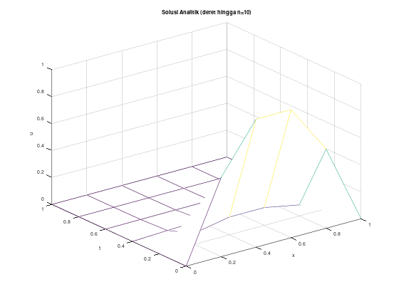
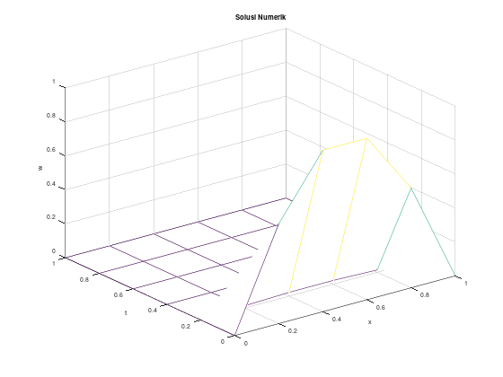
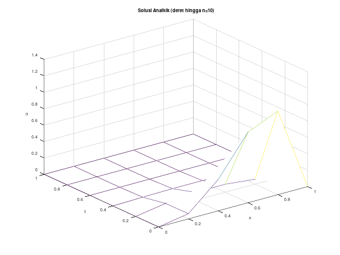
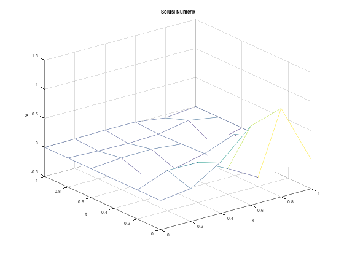
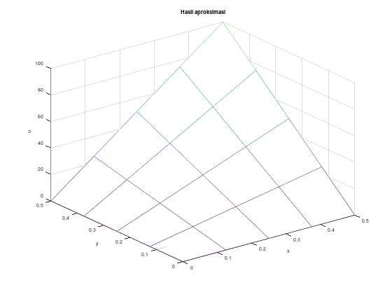

Modul 4 Praktikum Pesamaan Diferensial Parsial: Skema Beda Hingga untuk Persamaan Panas (Lanjutan) dan Persamaan Laplace
Numerical Solutions to Heat Equations and Laplace Equations
Kembali ke Praktikum Persamaan Diferensial Parsial
Persamaan Panas (Difusi)
Recall bahwa persamaan panas memiliki bentuk umum sebagai berikut. \[ \begin{gather*} \frac{\partial u}{\partial t}(x, t) = \alpha^2\frac{\partial^2 u}{\partial x^2}(x, t),\\ 0 < x < l,\hspace{1 cm} t> 0. \end{gather*} \] terhadap kondisi batas \[ \begin{gather*} u(0, t) = u(l,t) = 0, &\text{ untuk } t>0,\\ u(x,0) = f(x), &\text{ untuk } 0\leq x\leq l, \end{gather*} \] Catatan: Kondisi batas dapat berubah bergantung kebutuhan.
Persamaan tersebut dapat juga ditulis sebagai \[ \begin{gather*} \frac{\partial u}{\partial t}(x, t) = \alpha^2\frac{\partial^2 u}{\partial x^2}(x, t) , \; \text{xb}< x < \text{xu},\; \text{tb}< t < \text{tu},\\ u(x, 0) = f(x),\; \text{xb} < x < \text{xu},\\ u(0, t) = \text{lb}(t) = 0,\; \text{tb} < t \leq \text{tu}\\ u(l, t) = \text{rb}(t) = 0,\; \text{tb} < t \leq \text{tu} \end{gather*} \] Step size yang digunakan sama persis seperti pada persamaan gelombang sebelumnya.
Step size dalam variabel \(x\) dapat ditulis sebagai \(h = \Delta x = l/m\), dengan \(m\) adalah bilangan bulat positif yang menyatakan banyaknya titik diskritisasi pada panjang interval domain \(l\).
Step size dalam variabel \(t\) dapat ditulis sebagai \(k = \Delta t = T/n\), dengan \(n\) adalah bilangan bulat positif yang banyaknya titik diskritisasi pada panjang interval waktu \(T\).
Metode Crank-Nicolson
Metode Crank-Nicolson diturunkan dengan merata-ratakan skema Forward-Difference pada langkah ke-\(j\) dan skema Backward-Difference pada langkah ke-\((j+1)\) untuk variabel waktu \(t\).
Dengan mengasumsikan bahwa \(\frac{\partial^2 u}{\partial t^2}(x_i, \hat{\mu}_j) \approx \frac{\partial^2 u}{\partial t^2}(x_i, \mu_j)\), kita memperoleh skema rata-rata beda hingga (averaged-difference method) dalam bentuk \[ \frac{w_{i,j+1} - w_{i,j}}{k} - \frac{\alpha^2}{2}\left[\frac{w_{i+1,j} - 2w_{i,j} + w_{i-1,j}}{h^2} + \frac{w_{i+1,j+1} - 2w_{i,j+1} + w_{i-1,j+1}}{h^2}\right] = 0 \]
dengan \(k\) adalah step-size waktu dan \(h\) adalah step-size untuk \(x\). Skema ini memiliki galat pemotongan lokal (local truncation error) sebesar \(O(k^2 + h^2)\).
Lakukan pemisalan \(\lambda = \alpha^2 \frac{k}{h^2}\), maka persamaan di atas dapat dituliskan ke dalam bentuk sistem matriks iteratif untuk setiap \(j = 0, 1, 2, \ldots\) yaitu \[ A\mathbf{w}^{(j+1)} = B \mathbf{w}^{(j)} \]
Lebih lanjut lagi, berdasarkan kondisi batas yang diberikan kita akan memperoleh \[ w_{0, j} = w_{m,j}=0,\; \text{ untuk setiap } j = 1, 2, 3\ldots \]
serta nilai awal pada langkah waktu pertama dapat diperoleh langsung dari \[ w_{i, 0} = f(x_i), \; \text{ untuk setiap } i = 1, 2, \ldots, m - 1. \]
Kode dan Contoh
Function file dengan faktorisasi Crout (buku)
Function file crank_nicolson_crout.m - nama file harus sama dengan nama fungsi.
function [x, t, w] = crank_nicolson_crout(d, f, lb, rb, xb, xu, tb, tu, dx, dt)
x = xb:dx:xu;
t = tb:dt:tu;
nx = length(x);
nt = length(t);
% Nilai lambda
lambd = (d * dt) / (dx^2);
% Nilai awal dan syarat batas
for i = 1:nx
w(i, 1) = f(x(i));
endfor
for j = 2:nt
w(1, j) = lb(t(j));
w(nx, j) = rb(t(j));
endfor
% Penyelesaian SPL menggunakan faktorisasi Crout
l(2) = 1 + lambd;
u(2) = -lambd / (2*l(2));
for i = 3:nx-2
l(i) = 1 + lambd + (lambd*u(i-1))/2;
u(i) = -lambd / (2*l(i));
endfor
l(nx-1) = 1 + lambd + (lambd*u(nx-2))/2;
for j = 2:nt
z(2) = ((1-lambd)*w(2, j-1) + (lambd/2)*w(3, j-1)) / l(2);
for i = 3:nx-1
z(i) = ((1-lambd)*w(i, j-1) + (lambd/2)*(w(i+1, j-1) + w(i-1, j-1) + z(i-
1))) / l(i);
endfor
w(nx-1, j) = z(nx-1);
for i = nx-2:-1:2
w(i, j) = z(i) - u(i)*w(i+1, j);
endfor
endfor
endfunctionFunction file dengan solusi SPL langsung
Function file crank_nicolson_langsung.m - nama file harus sama dengan nama fungsi.
function [x, t, w] = crank_nicolson_langsung(alph2, f, lb, rb, xb, xu, tb, tu, h, k)
x = xb : h : xu;
t = tb : k : tu;
m_plus_1 = length(x);
N_plus_1 = length(t);
w = zeros(m_plus_1, N_plus_1);
lambda = (alph2 * k) / h^2;
% memasang nilai awal
for i = 1 : m_plus_1
w(i, 1) = f(x(i));
endfor
% memasang syarat batas
for j = 2 : N_plus_1
w(1, j) = lb(t(j));
w(m_plus_1, j) = rb(t(j));
endfor
% menyusun matriks A
A = zeros(m_plus_1 - 2, m_plus_1 - 2);
for i = 1 : (m_plus_1 - 2)
% isi sebelah kiri/atas diagonal
if (i > 1)
A(i, i-1) = -lambda/2;
endif
% isi diagonal
A(i, i) = 1 + lambda;
% isi sebelah kanan/bawah diagonal
if (i < m_plus_1 - 2)
A(i, i+1) = -lambda/2;
endif
endfor
% menyusun matriks B
B = zeros(m_plus_1 - 2, m_plus_1 - 2);
for i = 1 : (m_plus_1 - 2)
% isi sebelah kiri/atas diagonal
if (i > 1)
B(i, i-1) = lambda/2;
endif
% isi diagonal
B(i, i) = 1 - lambda;
% isi sebelah kanan/bawah diagonal
if (i < m_plus_1 - 2)
B(i, i+1) = lambda/2;
endif
endfor
% penyelesaian Aw^(j) = Bw^(j-1):
% misalkan z = Bw^(j-1), lalu selesaikan Aw^(j) = z
for j = 2 : N_plus_1
z = B * w(2 : m_plus_1 - 1, j-1);
w(2 : m_plus_1 - 1, j) = A \ z;
endfor
endfunctionContoh 1
Sama seperti untuk backward difference, akan kita uji dengan persamaan difusi:
\[\begin{align*} u_t - u_{xx} &= 0, \quad 0 < x < 1, \quad t > 0, \\ u(0,t) &= u(1,t) = 0, \quad t > 0, \\ u(x,0) &= \sin \left(\pi x\right), \quad 0 \le x \le 1 \end{align*}\]
dengan solusi eksak:
\[u(x,t) = e^{-\pi^2 t} \sin \left(\pi x\right)\]
Kita batasi \(t\) menjadi \(0 \le t \le 1\) dan gunakan \(\Delta x = 0.2\) dan \(\Delta k = 0.2\), di mana kondisinya tidak stabil untuk metode eksplisit.
Menggunakan function file dari pseudocode:
d = 1;
f = @(x) sin(pi*x);
lb = rb = @(t) 0;
xb = 0;
xu = 1;
tb = 0;
tu = 1;
dx = 0.2;
dt = 0.2;
% [x, t, w] = crank_nicolson_crout(d, f, lb, rb, xb, xu, tb, tu, dx, dt);
[x, t, w] = crank_nicolson_langsung(d, f, lb, rb, xb, xu, tb, tu, dx, dt);
u = @(x, t) exp(-pi^2.*t) * sin(pi.*x);
for i = 1:length(x)
for j = 1:length(t)
ufig(i, j) = u(x(i), t(j));
endfor
endfor
figure(1);
mesh(x, t, ufig');
xlabel("x");
ylabel("t");
zlabel("u");
figure(2);
mesh(x, t, w');
xlabel("x");
ylabel("t");
zlabel("u");

Contoh 2
Akan kita uji menggunakan persamaan panas:
\[ \begin{align*} u_t - u_{xx} &= 0, \quad 0 < x < 1, \quad t > 0 \\ u(0,t) &= u(1,t) = 0, \quad t \le 0 \\ u(x,0) &= 10x^3(1-x), \quad 0 \le x \le 1 \\ \end{align*} \]
Solusi eksak dari PDP tersebut adalah:
\[ \begin{align*} u(x,t) &= \sum_{n=1}^{\infty} c_n e^{-n^2 \pi^2 t} \sin \left( n\pi x\right) \\ c_n &= 20 \int_0^1 x^3 (1-x) \sin \left( n\pi x \right) dx, \quad n = 1, 2, \dots \end{align*} \]
alph2 = 1;
f = @(x) 10 * x .^ 3 .* (1 - x);
lb = @(t) 0;
rb = @(t) 0;
xb = 0;
xu = 1;
tb = 0;
tu = 1;
h = 0.2;
k = 0.2;
[x, t, w] = crank_nicolson_langsung(alph2, f, lb, rb, xb, xu, tb, tu, h, k);
u = zeros(length(x), length(t));
for i = 1 : length(x)
for j = 1 : length(t)
u(i, j) = 0;
for n = 1 : 10
F = @(x) x .^ 3 .* (1 - x) .* sin(n * pi .* x);
cn = 20 * integral(F, 0, 1);
u(i, j) += cn * exp(-n^2 * pi^2 .* t(j)) .* sin(n * pi .* x(i));
endfor
endfor
endfor
figure 1;
mesh(x, t, w');
title("Solusi Numerik");
xlabel("x");
ylabel("t");
zlabel("w");
figure 2;
mesh(x, t, u');
title("Solusi Analitik (deret hingga n=10)");
xlabel("x");
ylabel("t");
zlabel("u");:::


Persamaan Laplace
Skema Beda Hingga
Dengan menggunakan formula centered-difference pada turunan parsial kedua terhadap \(x\) dan \(y\), kita akan memperoleh bentuk persamaan beda hingga untuk persamaan Poisson (sebagai bentuk umum persamaan Laplace ketika \(f(x,y)=0\)) dalam bentuk \[ 2\left[\left(\frac{h}{k}\right)^2 + 1\right]w_{i,j} - (w_{i+1,j} + w_{i-1,j}) - \left(\frac{h}{k}\right)^2 (w_{i,j+1} + w_{i,j-1}) = -h^2 f(x_i, y_j) \]
untuk setiap titik interior \(i = 1, 2, \ldots, n - 1\) dan \(j = 1, 2, \ldots, m - 1\), dengan \(h\) adalah step-size untuk sumbu \(x\) dan \(k\) adalah step-size untuk sumbu \(y\).
Lebih lanjut lagi, berdasarkan kondisi batas \(u(x,y) = g(x,y)\) yang diberikan pada wilayah evaluasi, kita akan memperoleh nilai pada batas-batasnya yaitu \[ w_{0,j} = g(x_0, y_j) \quad \text{dan} \quad w_{n,j} = g(x_n, y_j), \quad \text{untuk setiap } j = 0, 1, \ldots, m; \]
serta nilai batas untuk sisi lainnya diperoleh dari \[ w_{i,0} = g(x_i, y_0) \quad \text{dan} \quad w_{i,m} = g(x_i, y_m), \quad \text{untuk setiap } i = 1, 2, \ldots, n - 1. \]
Sistem beda hingga ini akan menghasilkan \((n - 1)(m - 1)\) persamaan linear. Untuk mengekspresikan persamaan tersebut ke dalam kalkulasi matriks yang lebih efisien, kita dapat melakukan pelabelan ulang (relabeling) pada titik-titik interior menjadi \(w_l = w_{i,j}\) dengan ketentuan \[ l = i + (m - 1 - j)(n - 1) \]
Gauss-Seidel
Sayangnya, tidak ada cara cepat untuk menyusun SPL tersebut. Apabila penyelesaian dilakukan secara manual, tidak masalah; kita tinggal susun SPLnya secara manual, hingga bisa disusun dalam bentuk matriks, baru menyelesaikan SPL dalam bentuk matriks tersebut (yang bisa dilakukan dengan metode langsung seperti OBE, invers, ataupun metode iteratif, atau dengan bantuan komputer).
Apabila PDP eliptik ingin diselesaikan secara program, daripada harus menyusun bentuk SPL secara rapi terlebih dahulu, kita bisa menggunakan metode penyelesaian SPL yang iteratif. Contohnya, metode Gauss-Seidel bisa langsung menggunakan bentuk umumnya, yaitu
\[2\left(\lambda+1\right) w_{i,j} - \left(w_{i+1,j} + w_{i-1,j}\right) - \lambda\left(w_{i,j+1} + w_{i,j-1}\right) = -h^2 f\left(x_i, y_j\right)\]
yang dipindahruaskan agar diperoleh
\[2\left(\lambda+1\right) w_{i,j} = \left(w_{i+1,j} + w_{i-1,j}\right) + \lambda\left(w_{i,j+1} + w_{i,j-1}\right) -h^2 f\left(x_i, y_j\right)\]
\[w_{i,j} = \frac{1}{2\left(\lambda+1\right)}\left(w_{i+1,j} + w_{i-1,j} + \lambda\left(w_{i,j+1} + w_{i,j-1}\right) -h^2 f\left(x_i, y_j\right)\right)\]
Menggunakan metode Gauss-Seidel, kita tinggal memasang tebakan awal untuk tiap variabel \(w_{i,j}\) (yang bisa dipasang nol semua menurut buku Burden), kemudian mengulang-ulang perhitungan menggunakan rumus tersebut hingga konvergen.
Kode dan Contoh
function [x, y, w] = eliptik_iteratif(f, db, ub, lb, rb, xb, xu, yb, yu, h, k, tol, M)
x = xb : h : xu;
y = yb : k : yu;
m_plus_1 = length(x);
N_plus_1 = length(y);
% susun matriks solusi w_{i,j}
% awalnya berisi nol semua agar sekaligus mengisi tebakan awal
w = zeros(m_plus_1, N_plus_1);
% isi syarat batas (saat ini masih nol semua)
for i = 1 : m_plus_1 % digeser dari i=0,...,m jadi i=1,...,(m+1)
w(i, 1) = db(x(i), yb);
w(i, N_plus_1) = ub(x(i), yu);
endfor
for j = 2 : (N_plus_1 - 1) % digeser dari j=1,...,(N-1) jadi j=2,...,N
w(1, j) = lb(xb, y(j));
w(m_plus_1, j) = rb(xu, y(j));
endfor
% lakukan iterasi metode Gauss-Seidel untuk semua nilai w_{i,j} lainnya
lambd = (h/k)^2;
err = tol + 1; % errornya sembarang dulu, yang penting masuk loop
k = 1;
while (!(err <= tol) && (k != M+1))
old_values = w(2 : m_plus_1 - 1, 2 : N_plus_1 - 1); % selain syarat batas
for i = 2 : (m_plus_1 - 1) % digeser dari i=1,...,(m-1) jadi i=2,...,m
for j = 2 : (N_plus_1 - 1) % digeser dari j=1,...,(N-1) jadi j=2,...,N
w(i, j) = w(i+1, j) + w(i-1, j) + lambd * (w(i, j+1) + w(i, j-1));
w(i, j) += - h^2 * f(x(i), y(j));
w(i, j) /= 2 * (lambd + 1);
endfor
endfor
new_values = w(2 : m_plus_1 - 1, 2 : N_plus_1 - 1); % selain syarat batas
err = max(max(abs(old_values - new_values))); % norm infinity
k += 1; % lanjut ke iterasi selanjutnya
endwhile
endfunctionContoh
Selesaikan PDP eliptik
\[\frac{\partial^2 u}{\partial x^2} \left(x,y\right) + \frac{\partial^2 u}{\partial y^2} \left(x,y\right) = 0, \quad 0 < x < 0.5, \quad 0 < y < 0.5\]
dengan syarat batas
\[u(x,0) = 0, \quad u(x, 0.5) = 200x, \quad 0 \le x \le 0.5\]
\[u(0,y) = 0, \quad u(0.5, y) = 200y, \quad 0 \le y \le 0.5\]
secara numerik dengan step size \(h = k = 0.125\), toleransi \(10^{-8}\), dan maksimum iterasi \(M=50\).
f = @(x,y) 0;
db = @(x,y) 0;
ub = @(x,y) 200*x;
lb = @(x,y) 0;
rb = @(x,y) 200*y;
xb = 0;
xu = 0.5;
yb = 0;
yu = 0.5;
h = 0.125;
k = 0.125;
tol = 10^(-8);
M = 50;
[x_arr, y_arr, w] = eliptik_iteratif(f, db, ub, lb, rb, xb, xu, yb, yu, h, k, tol, M);
% menampilkan nilai aproksimasi dalam bentuk seperi grid
disp("Grid nilai aproksimasi:");
disp(flipud(w'));
% gambar mesh hasil aproksimasi
figure;
mesh(x_arr, y_arr, w');
title("Hasil aproksimasi");
xlabel("x");
ylabel("y");
zlabel("u");Grid nilai aproksimasi:
0 25.0000 50.0000 75.0000 100.0000
0 18.7500 37.5000 56.2500 75.0000
0 12.5000 25.0000 37.5000 50.0000
0 6.2500 12.5000 18.7500 25.0000
0 0 0 0 0